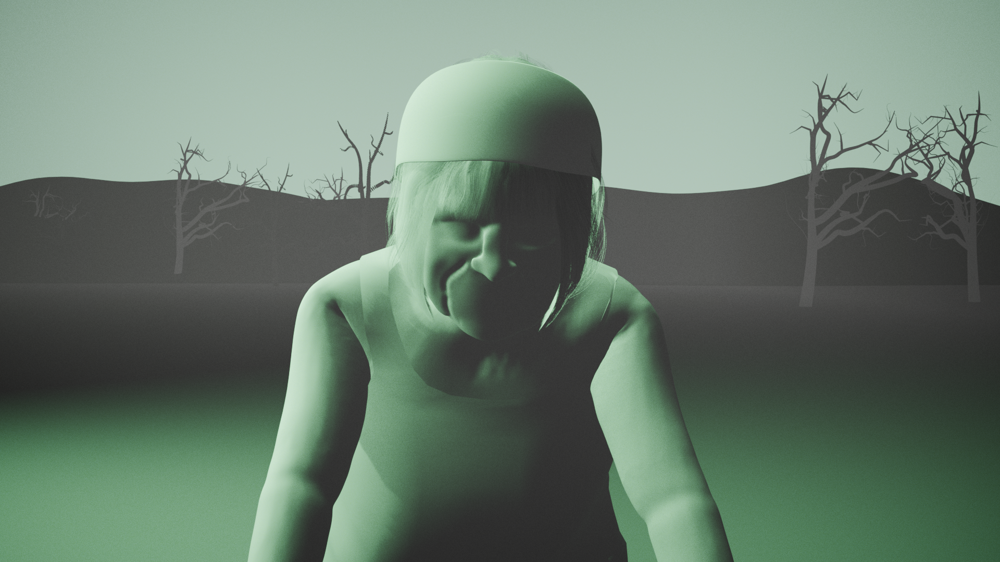

COURTNEY SPISAK
( SHE/HER )
Portfolio: LINK
About the Artist
Courtney Spisak is a Digital Media artist who produces 3D models made in Blender. Her choice of technique is to create high-poly 3D models using digital sculpting and then converting them to low-poly. She has begun incorporating a series of media in her work, bridging a gap between the digital and the physical. She starts with the digital file, 3D prints it, and converts it into a physical object. Her work centers around philosophical topics, primarily those that concern existential or ethical themes.
The Myth of Margery
"The Myth of Margery" is a 3d animation depicting this very concept that focuses on my grandmother, Margery, and her struggle to break free from a curse. The animation is meant to portray the struggle of dementia and the end of life. The animation goes between two phases: the Lifescape and the Cliffscape. The Lifescape is characterized by the color green and represents moments of her life that occur during dementia episodes. On the other hand, the Cliffscape is characterized by the use of grayscale colors and represents what is happening in reality.
This piece was made primarily in Blender. All of the models and animations were created in Blender. The final edits and composite were made using Premiere Pro. Most of the music was written using Ableton Live. In addition to everything that I made, I used some sounds from Soundsnap and purchased the hair from TurboSquid.
The idea of this piece was inspired by real-life events. My grandmother, Margery, passed away six months ago. She had been ill for ten years, during which she gradually and painfully declined. She was cursed with the cruel fate of her illness: agony, deterioration, and dementia. There was no reversing this. There was no preventing this. There was just living with it.
This piece is inspired by absurdist philosophy. Absurdism believes that the world is absurd and life is the struggle of accepting the absurd. People all strive to understand their meaning and purpose in life. However, life is actually devoid of any such meaning and purpose, and as a result, people experience feelings of absurdity when they realize that there is no purpose. Camus likens the human struggle of life to Sisyphus's fate of eternally pushing a boulder up a mountain in The Myth of Sisyphus. Every time the boulder would fall, Sisyphus would need to start over again. This cycle happens for eternity. However, despite this situation, “One must imagine Sisyphus as happy.”
My mind kept pondering this. Over and over, I have been using this metaphor and comparing it to the situation my grandmother was in. I began to wonder about family and love and bonds. The whole family gathered to be with my grandmother. We were all there helping one another out. We all stepped aside from everything else to be there. I ask why? What caused us to do that? I think it was a combination of factors: love and a familial bond. We are all connected and interwoven through this strange, invisible bond. These tethers allow us to come together and provide strength for one another.


